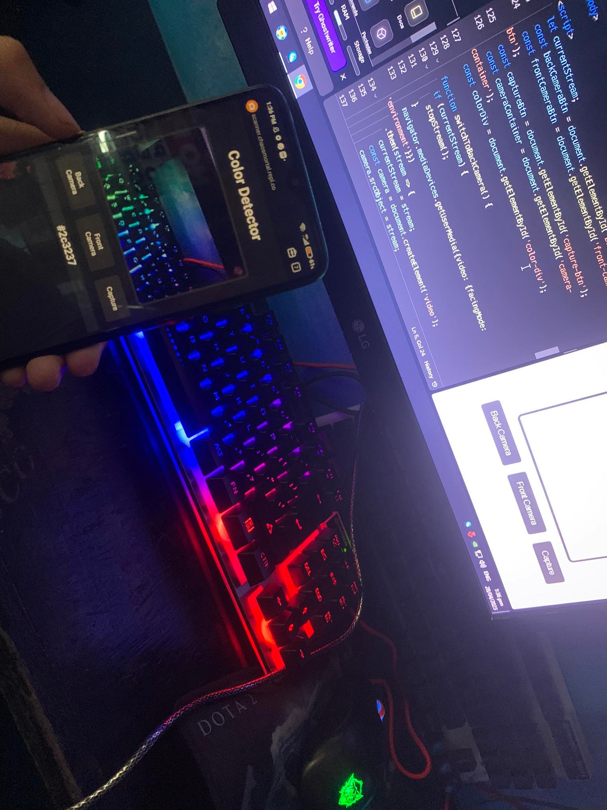

How Jerome Edica became a Developer at his young age
Dated Posted: May. 28, 2023
I am "Jerome Edica", and even as a child, I was already fond of computers. I started using a computer when I was 7 years old. Because I was mischievous in handling it, I ended up breaking my cousin's computer. Despite the things I broke, I still managed to learn how to use it. Gaming was my passion when I was young, but I continued to explore what else I could do with a computer. I even learned how to use Facebook at a young age because I was curious about how technology works. As time went on, I learned more and was able to do more. I also learned how to hack simple things like Wi-Fi when I was in elementary school and how to find bugs in applications. I just recently discovered that it's called 'bug bounty,' and I realized that there's a significant amount of money that can be earned from it. But it's okay because at least I learned. But how did I become a website developer or what they call a 'Front End Developer'? It started when I was in Grade 9. I stopped studying in 2020, not only because of the pandemic caused by COVID-19, but also because I couldn't afford to study in a private school. However, when I stopped, it didn't occur to me to just rest all the time and watch or play games. I thought about what I could do or what I wanted to learn to make good use of my time. I started studying Ethical Hacking. I learned how to hack someone's basic identity, but of course, I was the person I hacked. It was better to test it on myself for my own learning and not harm others. I also learned how to create 3D models, basic animation, basic graphics, and other things because I also enjoy designing houses and various things. I stumbled upon website development when I became interested and serious about studying cybersecurity. But of course, I'm not yet that skilled, and I'm still learning, so I'm still curious. According to an article I read, learning website development is necessary, and there's a point to it because if you know how to create a website, there's also a chance to learn how to bypass one. And it's really important to learn Cybersecurity, at least the basics, so that we know how to create a safe website. I also proved that age doesn't matter when it comes to learning if you really want to learn. I learned a lot on my journey, but I feel like I want to have companions or see people like me in this field. That's why I thought of joining communities to grow alongside them and help each other improve. That's where I met @Atcha_Abe, who became my elder sister in the community. Because of her, I met many people, not just ordinary individuals, but big names in the IT field, and many skilled individuals. This motivated me even more to work on projects to improve myself as well.